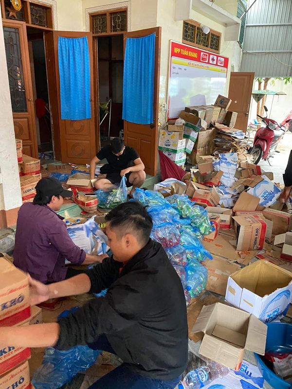

Kỳ Duyên cứu trợ miền Trung nhưng bị mất cả trăm triệu vì hỏng hết hàng
1500 suất hàng của Kỳ Duyên cứu trợ miền Trung đã bị nước lũ ngập làm hỏng hết, tuy nhiên nàng hậu này đã gom lại đợt hàng mới đủ để phát cho bà con.
TIN LIÊN QUAN
- Hình ảnh Thủy Tiên ăn mì giữa lũ khiến dân mạng xúc động
- Yêu 6 năm cưới 5 ngày thì chồng thú nhận có con với người khác
- Âu Hà My ủng hộ miền Trung 100 triệu sau hơn 1 tháng ở ẩn
Cách đây vài ngày, Hoa hậu Kỳ Duyên cứu trợ miền Trung bị chê không xông xáo bằng Thủy Tiên, nhưng mới đây cô cùng Minh Triệu và một số người bạn cũng đã có mặt tại Quảng Bình để cung cấp nhu yếu phẩm cho bà con bị ngập lũ.
Tuy nhiên, không may mắn là 1500 suất hàng của Hoa hậu đã hỏng hết do bị ngập nước lũ. Kỳ Duyên chia sẻ trên Facebook: "Mấy hôm trước mưa lớn lũ dâng cao, tất cả số hàng hóa cứu trợ đều bị lũ tràn vào làm hỏng gần hết 1500 phần cứu trợ đã được đoàn mình chuẩn bị từ trước. Hơn nữa bây giờ các loại lương thực dường như là “cháy hàng” tại Quảng Bình. Đoàn mình và đại lý từ qua tới nay là hoạt động hết công suất để có thể chuẩn bị lại được hết 1500 suất, để hôm nay có thể đi phát cho bà con".
Dù cũng đã kêu gọi cũng xấp xỉ tiền tỷ nhưng 1500 suất hàng bị hỏng cũng phải lên tới cả trăm triệu. Nhiều người tỏ ra rất tiếc trước sự cố này đồng thời khuyên Kỳ Duyên hãy cẩn thận hơn.
Dù vậy, Hoa hậu Việt Nam 2014 cũng đã gom lại đủ số lượng 1500 suất hàng mới để đi phân phát cho bà con. Mỗi suất gồm gồm 1 thùng mì tôm, 50 gói lương khô, 1 hộp xúc xích 50 cái, 1 chai nước suối 1,5l. Nhiều người cho rằng suất hàng Kỳ Duyên cứu trợ miền Trung rất đầy đủ, thậm chí cô nàng còn thừa nhận là 'cực kỳ chất lượng'.